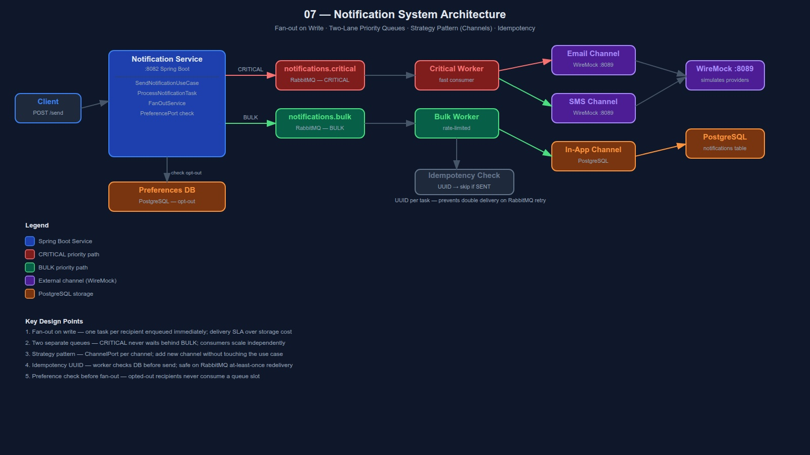

Fan-out on write · Priority queues · Strategy pattern · Idempotency
Delivers messages from your app to users across channels. Every production app has one.
Send 1 OTP in < 1s AND send 1 marketing email to 1M users — without one blocking the other.
❌ Naive approach — synchronous in request thread:
POST /send → for each recipient → call SendGrid → wait → next
→ 1M users × 200ms = 55 hours to send a "campaign"
→ OTP queued behind bulk emails → user waits → gives up
✅ Our approach — async, two-lane:
POST /send → fan-out tasks → route by priority
CRITICAL lane → fast consumer → sent in < 1s
BULK lane → rate-limited consumer → sent over hours
→ never blocks CRITICAL
One send event → one NotificationTask per recipient, enqueued immediately at write time.
SendNotification(type=ORDER_SHIPPED, recipients=[A, B, C], channel=EMAIL)
↓
check preferences: A=active, B=opted-out, C=active
↓
fan-out → Task(A, EMAIL) Task(C, EMAIL)
↓ ↓
enqueue enqueue ← B skipped
↓ ↓
worker picks up → sends email
Why not fan-out on read? Fan-out on read defers work to query time — good for social feeds (project 10) where delivery SLA doesn't matter. For notifications, tasks must enter the queue NOW so workers start immediately.
Separate queues = separate consumers = CRITICAL never waits behind BULK.
notifications.criticalnotifications.bulkRabbitMQ work queue — no replay needed. Failed tasks go to DLQ for inspection.
Each delivery channel is a ChannelPort implementation. Use case selects strategy at runtime.
interface ChannelPort {
void send(NotificationTask task);
boolean supports(Channel channel);
}
EmailChannelAdapter implements ChannelPort → POST to WireMock /email
SmsChannelAdapter implements ChannelPort → POST to WireMock /sms
InAppChannelAdapter implements ChannelPort → INSERT into PostgreSQL
// ProcessNotificationTaskUseCase:
channelPorts.stream()
.filter(p -> p.supports(task.channel()))
.findFirst()
.orElseThrow()
.send(task);
Adding a new channel (e.g. push notifications) = new adapter + register in AppConfig. Zero changes to use case.
RabbitMQ retries on failure. Without a guard, the user gets 2 OTPs.
// Each NotificationTask has a UUID:
record NotificationTask(UUID notificationId, String recipientId, Channel channel, ...)
// Worker checks before sending:
if (notificationRepository.existsSent(task.notificationId())) {
return; // already delivered — ACK and skip
}
channelPort.send(task);
notificationRepository.updateStatus(task.notificationId(), SENT);
// Scenario: worker crashes after send, before ACK
// RabbitMQ redelivers → existsSent() = true → skip → safe
Trade-off: tiny window where crash-after-send but before DB update causes a duplicate. Acceptable for notifications (not financial transactions).
| Layer | Class | Responsibility |
|---|---|---|
| API | NotificationController | POST /send, PUT /preferences, GET /inbox |
| Application | SendNotificationUseCase | preference check → fan-out → enqueue |
| Application | ProcessNotificationTaskUseCase | idempotency check → dispatch to channel |
| Domain | FanOutService | builds one task per active recipient |
| Domain | Notification, NotificationTask | immutable records |
| Domain | ChannelPort, TaskQueuePort | ports (interfaces) |
| Infra | RabbitMqTaskQueue | routes to critical or bulk queue |
| Infra | Email/Sms/InAppChannelAdapter | delivery strategies |
| Infra | JpaNotificationRepository | persists status, idempotency check |
# Start infrastructure
docker-compose up -d
# Run tests
JAVA_HOME=/usr/lib/jvm/java-21-openjdk-amd64 mvn test -f backend/pom.xml
# Run service (port 8082)
JAVA_HOME=/usr/lib/jvm/java-21-openjdk-amd64 mvn spring-boot:run \
-f backend/pom.xml -pl notification-service
# Send CRITICAL notification (OTP)
curl -X POST http://localhost:8082/api/v1/notifications/send \
-H "Content-Type: application/json" \
-d '{"type":"OTP","recipients":["user-1"],"channel":"EMAIL","priority":"CRITICAL","payload":"Your OTP is 847291"}'
# Send BULK notification
curl -X POST http://localhost:8082/api/v1/notifications/send \
-H "Content-Type: application/json" \
-d '{"type":"PROMO","recipients":["user-1","user-2"],"channel":"SMS","priority":"BULK","payload":"50% off today!"}'
# Opt out
curl -X PUT http://localhost:8082/api/v1/preferences/user-1 \
-H "Content-Type: application/json" \
-d '{"channel":"SMS","optedOut":true}'
# In-app inbox
curl http://localhost:8082/api/v1/notifications/inbox/user-1
Full system view — components, data flows, and design decisions
